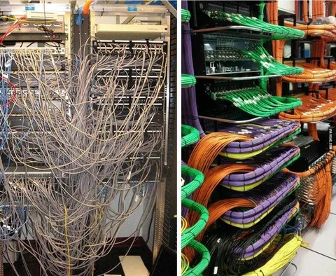

Существенное количество моих коллег завели отдельную телегу для работы, чтобы не смешивать личное и рабочее. А я - нет. Почему? Попробуем разобраться. А заодно, поговорим о культуре корпоративных коммуникаций.
1. Папки с чатами. Настройте их так, чтобы была четкая граница. Тут - работа (чаты). Отдельно - чаты 1 на 1. Тут - личное. Там - развлечения (каналы, мемасики, флудилки). Тогда можно даже в отпуске открывать телегу и смотреть только в нерабочие папки, чтобы глаз не дергался.
2. Нотификации. Отключите их для всего, кроме личных сообщений и инцидентных чатов. У меня не на мьюте, кажется, только 3 чата (все - инцидентные). Невозможно сосредоточенно работать, когда у тебя мелькают сообщения из десятков и сотен чатов. А если вы пишете кому-то (или в критичный чат, который у многих не замьючен), задумайтесь о времени и важности своего сообщения. До 10 утра и после 19 вечера я почти всегда отправляю сообщение без звука (слава телеге, что так можно). В инцидентный чат на сотни людей сообщение, не требующее незамедлительной реакции многих, отправляйте без звука.
Оффтоп: а помните те времена, когда мы столь старательно выбирали рингтоны, и даже покупали их через смс на короткий номер? Даже нелепо. Вот признайтесь, у кого сейчас включен звук на телефоне хотя бы иногда? Я даже не сразу вспомнил, что у меня сейчас стоит на рингтоне. Времена меняются. И мы меняемся.
3. А в отпуске я полностью отключаю нотификации телеги. Кому будет очень сильно надо - позвонят (спойлер - такое было лишь однажды). Ни в коем случае не заглядывайте в рабочие чаты и лички от коллег в отпуске, а то вы тем самым обнулите весь достигнутый к этому моменту прогресс по детоксикации от мыслей о работе. Да, для этого нужна определенная дисциплина. Но если вы испытываете тревогу, что без вас там что-то может пойти не так - возможно, это само по себе проблема - нельзя быть незаменимым, поработайте над тем, чтобы без вас за 2 недели никогда ничего не разваливалось. Поэтому я никогда не злюсь на тех, кто мне пишет в отпуске - один фиг я это прочитаю только уже на работе, а они пусть учатся справляться без меня. Но сам почти никогда не пишу людям в отпуск.
4. Общение с семьей и друзьями. Тут совет не универсален, но моему поколению "повезло" - я уже не в том возрасте, чтобы переписываться активно со всеми подряд, и еще не в том возрасте, чтобы слать упоротые открытки в вотсаппе. С друзьями мы лучше раз в полгода встретимся в баре и за рюмкой чая обсудим все новости. А родным лучше позвонить или приехать к ним. Так что личных переписок у меня очень мало, и я не чувствую смешения их в телеге. Для меня телега - на 90% рабочий инструмент.
5. Уважайте чужое внимание и не распаляйте свое. Не надо писать отдельными сообщениями с интервалом в 5 секунд: "привет", "дело есть", "кароч", "<суть вопроса>". Напишите сразу всю мысль целиком. Предоставьте все нужные сведения одним сообщением, чтобы по максимуму не потребовались уточнения. Дайте контекст, объясните, какую задачу вы решаете. Я сам почти никогда не отвечаю на "привет", пока в переписке не появится суть вопроса. Помните, что переключение контекста - один из самых дорогих и бесполезных процессов для нашего внимания.
6. Тут должен был быть развесистый пункт про Zero unread, но пост и так выходит слишком длинный. Так что отложим до следующего номера.
А какие вы предложите советы для повышения комфорта и эффективности коммуникаций? Или поворчите в комментариях, что вас бесит в переписках.
